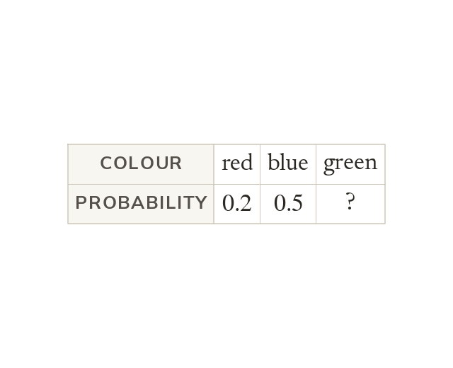

A probability distribution
A probability distribution lists every outcome with its probability. The probabilities add up to
A missing one is minus the others.
A probability distribution lists every outcome with its probability, and these must add up to
A missing probability is minus all the others.
A missing probability is minus all the others.